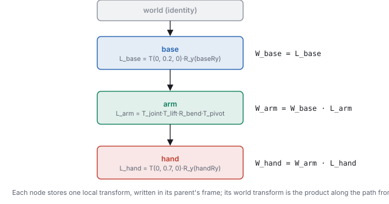
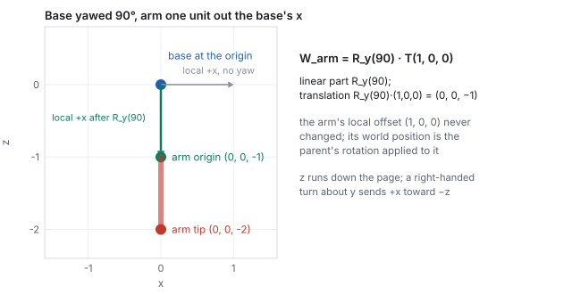
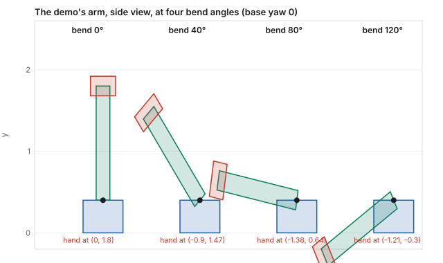
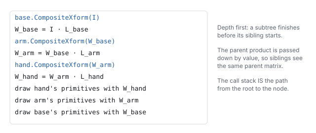
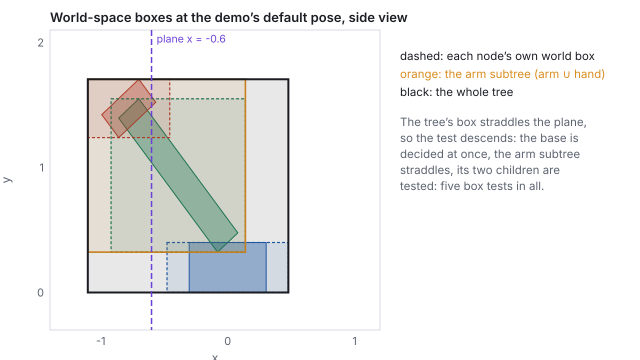
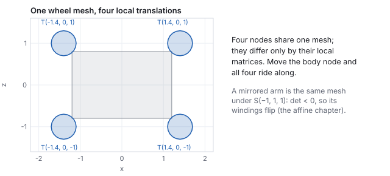
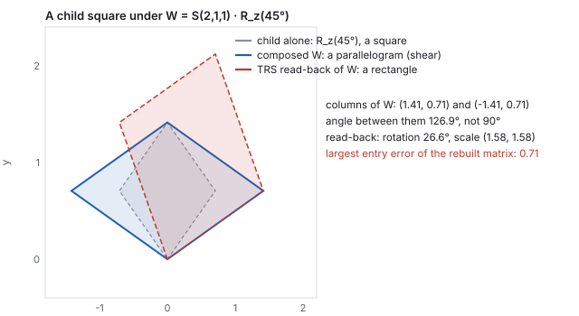

This chapter links to the course’s interactive demos and uses MathJax for its formulas. Read it through the course website (or download the file and open it in a browser); a Canvas inline preview will reach neither the demos nor the math. All chapters.
A robot arm, a character’s skeleton, a solar system: things built from jointed parts, where moving a parent must carry its children along. The scene graph is the structure that guarantees this. Every node stores one local transform, written in its parent’s frame, and every node’s world transform is the product of the local transforms along the path from the root. This chapter states that rule, derives it from the affine chapter’s composition of frames, works a two-node chain by hand and checks it against the library, and shows the recursion that computes a whole tree once per frame, first as a recursion and then as the explicit matrix stack an engine keeps. It then covers what the tree is used for beyond drawing: which world matrices a change invalidates, converting a point between any two nodes’ frames, hanging the camera on a node, a bounding box per subtree so a whole limb is culled with one test, and instancing one mesh under many nodes. It shows, with numbers, the one thing the tree cannot hold, a shear inherited from a non-uniformly scaled parent, and ends with the chain written as glTF nodes, where a pivot becomes an extra node and a rotation becomes a quaternion.
Picture a base bolted to the floor, an arm hinged on the base, and a hand on the arm’s tip. Three rigid parts, three joints, and one constraint: they are attached. Yaw the base and the arm and hand must swing with it. Place each part with its own, independent world transform and the constraint is silently lost: yaw the base and nothing happens to the arm, because the arm’s transform never mentioned the base. Keeping the linkage together by hand would mean re-deriving every descendant’s world transform each frame, and the arithmetic that does that correctly is exactly the composition below. So build the tree, and get it for free.

The same tree is everywhere something is built from carried parts: a character is a tree of bones (the hand bone rides the forearm rides the upper arm; the animation chapter drives that tree with joint angles), a vehicle is a turret on a hull and wheels on axles, a solar system is moons about planets about a star. Whenever part B is attached to and carried by part A, B is a child of A. The word graph is historical (Open Inventor and VRML allowed shared subtrees, a directed acyclic graph); every engine in use today stores a tree, and shares geometry rather than nodes (Section 12).
A node’s local transform \(L\) maps its own frame into its parent’s frame; the parent’s world transform \(W_{\text{parent}}\) maps the parent’s frame into the world. Composing two frame changes multiplies their matrices, in apply order:
That is “move the parent, the children follow” as arithmetic: because \(W_{\text{parent}}\) contains the base’s yaw, every descendant inherits it, and the author never touched the descendants. The discipline that makes it work is that a local transform is written in the parent’s frame, not the world’s. “Climb to the base’s top surface and hinge” stays true no matter where the base goes. The rule is also why the order of multiplication cannot be negotiated: a matrix product is not commutative (the affine chapter), and \(L_{\text{hand}}\,L_{\text{arm}}\,L_{\text{base}}\) would hinge the base about the hand.
matMul(makeTRS(0,0,0, 0,90,0, 1,1,1), makeTRS(1,0,0, …)).

The demo’s real arm is not a single translation. Its box is modeled centered on its own origin, spanning \(y \in [-0.7, 0.7]\), but it must hinge about its lower end, the joint where it meets the base, and then sit on the base’s top surface. A single translate-rotate-scale cannot express a rotation about an end, so the local transform is a pivot sandwich:
\[ L_{\text{arm}} = T_{\text{joint}}\cdot T_{\text{lift}}\cdot R_{\text{bend}}\cdot T_{\text{pivot}}, \qquad T_{\text{pivot}} = T(0, 0.7, 0),\;\; R_{\text{bend}} = R_z(\text{bend}),\;\; T_{\text{joint}} = T(0, 0.2, 0). \]
Read right to left: \(T_{\text{pivot}}\) lifts the centered box so its lower end sits at
the origin; \(R_{\text{bend}}\) hinges about that origin; \(T_{\text{joint}}\) (and an
optional extra gap \(T_{\text{lift}}\)) carries the bent arm up to the base’s top
surface, which is \(0.2\) above the base’s center. This is the affine chapter’s
\(T(\mathbf{p})\,R\,T(-\mathbf{p})\), specialized
to a joint at a box’s end. The base and the hand need only one makeTRS
call each, because each turns about its own center.

One method computes every node’s world matrix, by recursion down the tree: receive the parent’s world matrix, multiply in the local matrix, draw this node’s geometry with the result, and pass the result to each child.
function compositeXform(node, parentWorld) {
node.world = matMul(parentWorld, node.local); // W = W_parent · L
for (const child of node.children) compositeXform(child, node.world);
for (const prim of node.primitives) prim.draw(node.world);
}
compositeXform(root, IDENTITY);

This traversal runs once per frame in every engine. Sung’s SceneNode in
the course’s Unity projects is exactly this method with a pivot offset and a
translate-rotate-scale from the Inspector as the local matrix, and a list of primitives
that each apply their own pivot sandwich before uploading the product to the shader.
Unity’s own Transform hierarchy does the same composition invisibly; the
course rebuilds it so the composition is visible in code.
The recursion’s call stack holds one matrix per level. Written out as a data
structure, it is the matrix stack of classic OpenGL (glPushMatrix,
glPopMatrix) and of every retained-mode renderer: a stack whose top is the
world matrix of the node being visited. Entering a node pushes \(\text{top}\cdot L\);
leaving it pops. The stack never holds more matrices than the tree is deep, and a
sibling starts from exactly the matrix its brother started from, because the
brother’s push has been popped.
stack = [IDENTITY]
function visit(node) {
stack.push(matMul(stack.top(), node.local)); // enter: top is now W_node
for (const child of node.children) visit(child);
draw(node, stack.top());
stack.pop(); // leave: top is W_parent again
}
| step | stack depth | top’s origin (world) |
|---|---|---|
| push base | 1 | \((0, 0.2, 0)\) |
| push arm | 2 | \((-0.39, 0.94, 0.22)\) |
| push hand; draw hand; pop | 3, then 2 | \((-0.78, 1.47, 0.45)\) |
| draw arm; pop | 1 | |
| push arm2 | 2 | \((0.39, 0.94, -0.22)\) |
| push hand2; draw hand2; pop | 3, then 2 | \((0.78, 1.47, -0.45)\) |
| draw arm2; pop; draw base; pop | 1, then 0 |
The stack view also explains a common bug. Draw the arm2 subtree without popping the first hand’s matrix and the second arm hangs off the first hand instead of the base: every push must have its pop, which is why the recursive form, where the language’s own call stack does the popping, is the safer one to write.
Recomputing every world matrix every frame is cheap for three nodes and wasteful for a scene of ten thousand, most of which did not move. Engines cache \(W\) on the node and mark it dirty when its local transform changes; a dirty node’s world matrix is recomputed on demand, and so is every descendant’s, because each of them contains the changed matrix in its product. Nothing above the node, and nothing in a sibling subtree, is touched.
| edited bone | matrices recomputed |
|---|---|
| the root (the character moves) | 59 |
| the first spine bone | 46 |
| the left upper arm | 19 |
| the left hand | 16 |
| a fingertip | 1 |
The same mechanism is why a node’s world matrix must be read through an accessor that checks the flag, never from the cached field directly: the field may be stale. It is also why deep hierarchies recompute from the locals rather than incrementally updating world matrices: a chain of sixty products in single precision drifts, as the rotation chapter measures, and a fresh product from authored locals every frame does not accumulate.
Once a node’s world matrix exists, any point authored in the node’s frame reaches the world by one multiply, and any world point comes back by the inverse:
\[ \mathbf{p}_{\text{world}} = W\,\mathbf{p}_{\text{local}}, \qquad \mathbf{p}_{\text{local}} = W^{-1}\,\mathbf{p}_{\text{world}} . \]
Since every factor in the chain is a translation, a rotation or a positive scale, the
product is still of that form, and the affine chapter’s block inverse
(invertTRS in the library) applies to it directly; no general inversion is
needed. Forward is placement (vertices, attachment points); backward is inquiry (is
this world point inside me; where on my arm did the mouse ray of
the interaction chapter hit).
Reading columns works here too: columns 1 and 2 of a node’s world matrix are the node’s world-space up and forward axes, which is how a frame is planted at a hierarchy’s tip without any further computation.
World space is a way station. To express a point known in node A’s frame in node B’s frame, go up to the world and back down: \(\mathbf{p}_B = W_B^{-1}\,W_A\,\mathbf{p}_A\). The product \(W_B^{-1}W_A\) is itself a rigid transform, the frame of A as seen from B, and it is what an inverse-kinematics solver, a constraint (“keep the hand on the handle”), or a physics joint works with.
Nothing distinguishes the camera from any other node. Give it a local transform under the hand and it rides the arm; its world matrix \(W_{\text{cam}}\) is where it is and which way it faces, and the view matrix of the viewing chapter is that matrix’s inverse, \(V = W_{\text{cam}}^{-1}\). This is how a driver’s-seat camera, a shoulder camera and a camera on a crane are built: as nodes, so that the same traversal that places the geometry places the eye.
A renderer should not send the frustum a triangle it cannot see, and it should not test every triangle to find out. Each node keeps a bounding volume around its own geometry, and each subtree keeps one around all of its descendants’ volumes; the frustum test of the viewing chapter then runs on the tree: a subtree whose box is entirely outside is rejected with one test, one entirely inside is accepted with one test, and only a box that straddles a plane is opened and its children tested. It is the same idea as the ray-tracing chapter’s bounding-volume hierarchy, with the scene graph’s own tree as the hierarchy.

The boxes are recomputed when the world matrices are, so they ride the dirty flags of Section 7; an engine stores the local box once and the world box per frame. A character’s skeleton uses the same trick in reverse for the mesh it skins: one box around the whole character, grown by the extent of any pose, so the character is culled as a unit.

Because a primitive’s shape is fixed in its node’s frame and the node supplies the matrix, one mesh can be instanced across many nodes that share geometry but differ by transform: four wheels, five fingers, both shoulders. Fix the wheel once and every copy updates; the tree turns “place \(N\) copies” into “\(N\) local transforms on shared geometry”. On the GPU the same idea is instanced drawing: one vertex buffer, an array of world matrices, one draw call, and the vertex shader picks its matrix by instance index. A forest of ten thousand trees is one mesh and ten thousand matrices.
The mirrored arm of Section 6 is instancing with a catch. \(S(-1, 1, 1)\) has determinant \(-1\), so every product below it does too (\(\det W_{\text{arm2}} = -1\)), and a determinant of \(-1\) reverses the winding of every triangle (the affine chapter): the mirrored arm’s front faces become back faces and the renderer culls the outside of the mesh and shows its inside. The fix is to flip the cull mode for nodes whose world determinant is negative, which every engine does by tracking the sign down the tree.
Engines store a node’s local transform as translation, rotation and scale, the TRS of the affine chapter, and hand back a node’s world transform in the same three parts. The product of two TRS matrices is not always a TRS matrix. A rotated child under a non-uniformly scaled parent has a world matrix with a shear, and there is no rotation and scale that reproduce it.

The same shear breaks normals, which is why the normal matrix is the inverse transpose of the world matrix, not the world matrix itself, and why the animation chapter interpolates the three parts separately and never the composed matrix.
A scene graph on disk is a list of nodes with parent links, and glTF, the format every
engine and tool reads today, stores exactly the structure of this chapter: an array of
nodes, each with an optional translation, rotation (a unit
quaternion, the rotation chapter’s \((x, y, z, w)\)),
scale and children (indices into the same array), and optionally
a mesh index. The world matrix is not stored; a reader recomputes it by the
composite rule. A node may instead carry a full 16-entry matrix, but a node with
a matrix cannot be animated, precisely because of Section 13.
"nodes": [
{ "name": "base", "translation": [0, 0.2, 0], "rotation": [0, 0.2588, 0, 0.9659], "children": [1] },
{ "name": "joint", "translation": [0, 0.2, 0], "rotation": [0, 0, 0.3420, 0.9397], "children": [2] },
{ "name": "arm", "translation": [0, 0.7, 0], "mesh": 0, "children": [3] },
{ "name": "hand", "translation": [0, 0.7, 0], "mesh": 1 }
]
Read the joint node’s local as \(T(0, 0.2, 0)\,R_z(40^\circ)\) and the arm’s as
\(T(0, 0.7, 0)\): their product is \(T_{\text{joint}}\,R_{\text{bend}}\,T_{\text{pivot}}\), the
sandwich of Section 4 with the lift folded into the joint. An animation in the file
targets the joint node’s rotation with keyframed quaternions, and a
skin lists which nodes are the bones of a skinned mesh, with one inverse bind
matrix each: the \(B_i^{-1}\) of the animation chapter.
css551/ directory; each prints the numbers of this chapter.
node -e "import('./lib/core/xform.js').then(x=>{
const W = x.matMul(x.makeTRS(0,0,0, 0,90,0, 1,1,1), x.makeTRS(1,0,0, 0,0,0, 1,1,1));
console.log(W.map(v=>+v.toFixed(2))); // [0,0,-1,0, 0,1,0,0, 1,0,0,0, 0,0,-1,1]
console.log(x.applyMat4(W, [1,0,0]).map(v=>+v.toFixed(2))); // [0, 0, -2, 1] the tip
console.log(x.applyMat4(x.invertTRS(W), [0,0,-1]).map(v=>+v.toFixed(2))); // [0, 0, -0, 1] the origin comes home
})"
The 16 numbers are the matrix of Section 3 stored column by column; the fourth column \((0, 0, -1, 1)\) is the translation.
node -e "import('./lib/core/xform.js').then(x=>{
const W = x.matMul(x.makeTRS(0,0,0, 0,0,0, 2,1,1), x.makeTRS(0,0,0, 0,0,45, 1,1,1));
const c0 = [W[0],W[1],W[2]], c1 = [W[4],W[5],W[6]];
console.log(c0.map(v=>+v.toFixed(3)), c1.map(v=>+v.toFixed(3)), 'dot', +x.dot(c0,c1).toFixed(3));
})"
Prints [1.414, 0.707, 0] [-1.414, 0.707, 0] dot -1.5. A rotation-and-scale matrix has orthogonal columns; a dot product of \(-1.5\) says this one is not.
node -e "import('./lib/core/xform.js').then(x=>console.log(
x.quatFromAxisAngle(0,1,0,30).map(v=>+v.toFixed(4)), x.quatFromAxisAngle(0,0,1,40).map(v=>+v.toFixed(4))))"
Prints [0, 0.2588, 0, 0.9659] [0, 0, 0.342, 0.9397].
applyMat4(invertTRS(W_hand), [0, 0.2, 0]) prints \((-0.129, -1.553, 0)\).
matMul(makeTRS(0,0,0,0,0,0,1,3,1), makeTRS(0,0,0,0,0,30,1,1,1)) has columns \((0.866, 1.5, 0)\) and \((-0.5, 2.598, 0)\); their dot product is \(3.464\) and the angle \(\arccos(3.464/(1.732\cdot2.646)) = 40.9^\circ\): sheared. Swapped, \(R_z(30^\circ)\,S(1,3,1)\) has columns \((0.866, 0.5, 0)\) and \((-1.5, 2.598, 0)\), dot product \(0\): a rotation of a scaled square, still a TRS. A scale below a rotation is safe; a rotation below a non-uniform scale is not.